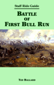
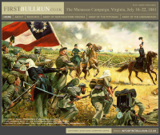

I. Where Shall I Begin?
...At the beginning naturally.
It was late spring 2007 when I decided to begin designing a game based upon Bowen Simmons's block and maneuver system, originally developed for Bonaparte at Marengo (BaM). Why? There are a number of reasons, but first and foremost because I—like others in the gaming community—craved another game that was like BaM, which was the only published game of its kind. Naturally (after some prodding), I took it upon myself to remedy that situation.
Before I started, however, I knew that there were some critical questions that I had to answer (mostly for myself). The two biggest were: (a) which game system to use, and (b) which battle to simulate.
The first question had (in hindsight, that is) a rather easy answer. At that time, the only published block and maneuver game rules were for BaM. Although BaM's sibling game, Napoleon's Triumph (NT), was publicly announced, its rules were only available as an unofficial pre-release version. After weighing the pros and cons of a BaM-like game versus a BaM/(pre-release) NT hybrid, I opted for the former. Like all game hobbyists who dabble in variants and/or game designs I had my own ideas on how to add to the game—but more on that later. (Little did I know in May 2007 how far the project would actually go.)
The second major question that I needed to answer was: What battle do I want to simulate? Since I knew more about the American Civil War (ACW) than of the Napoleonic Wars, I opted for an ACW battle as the game's conflict. (To be clear, I was not then nor now a self-proclaimed expert on the subject matter—although I do know I little more now.) While researching ACW battles, the Battle of First Bull Run quickly migrated from the "short list" to the "it" list; I knew that I had found my battle. A few details of the battle helped make it my battle of choice: (1) the Union and Confederate forces were relatively evenly matched; (2) it was a small battle (when compared to later ACW battles) that would not require a major overhaul of the block and maneuver command system; and (3) analysis by historians (whether correct or not) indicated that the battle could have been won by the losing army (namely, the Union).
There were a number of excellent online resources that I uncovered during my research that provided high-quality information about the Battle of First Bull Run. Two resources in particular:
|  |  |
| Battle of First Bull Run | FirstBullRun.co.uk |
It was during this period that I made another decision regarding the game, which in fact, may have been one of the first ones I made. It was simply this: the game would be web-published and be playable via an online, remote play gaming system (e.g., CyberBoard). For whatever reason, I only played BaM (and later, NT) online against remote opponents. Influenced by this as well as by the apparent success of the BaM Ladder, I decided that a CyberBoard-based game would not be such a bad idea. (That said, I will investigate opportunities to the physically publish the game as my time, energy, and resources permit.)
As promised, I wanted to review some of the early features that I wanted to incorporate into the game's design (and also a brief comment on whether the feature stayed, changed, or was dropped).
- Variable commands per turn. (Stayed. The current command card solution handles this so that players have between 4 and 6 commands per turn, with a total of 15 commands every 3 turns.)
- Visibility of adjacent units. (Changed. The maneuver command allows players to 'prod' their opponent into revealing, at least some, units.)
- Multiple strength artillery units. (Dropped. This concept never made it past the R&D lab's door.)
And so, after jotting down some tentative game titles—of which Baptism at Bull Run was one—I began my search for the "perfect" map, which will be covered in the next design diary entry.
Released: 2008-05-09 23:53 EDT.
For questions and/or feedback, please send e-mail to: baptismatbullrun@....com (Click the hyperlink to reveal the e-mail address.)
Further discussion about Baptism at Bull Run can be found at either of these game hobbyist websites: BoardGameGeek ConsimWorld